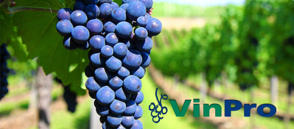
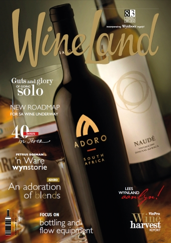

<!DOCTYPE html>
<html ng-app="ionicApp">
<head>

  <meta charset="utf-8">
  <meta name="viewport" content="initial-scale=1, maximum-scale=1, user-scalable=no, width=device-width">

  <title>Ionic Tabs and Navigation</title>

  <link href="css/ionic.app.css" rel="stylesheet">
  <link href="css/ionicons.css" rel="stylesheet">
  <!--<link href="css/style.css" rel="stylesheet"> taken out to invoke sass-->
  <!--<link href="css/ionic.css" rel="stylesheet">taken out to invoke sass-->

  <script src="js/ionic.bundle.min.js"></script>
  <script src="js/script.js"></script>
  <script src="js/ionic.bundle.js"></script>
  <!-- Before cordova.js -->
  <script src="lib/sha.js"></script>
  <script src="lib/angular-resource/angular-resource.js"></script>
  <script src="lib/ngCordova/dist/ng-cordova.js"></script>
  <script src="cordova.js"></script>
  <!-- After cordova.js -->
  <script src="js/ngcontrollers.js"></script>
  <script src="js/ngservices.js"></script>
  <script src="js/app.js"></script>

</head>
<body ng-app="starter">

  <ion-nav-bar class="nav-title-slide-ios7 bar-positive">
    <ion-nav-back-button class="button-icon ion-arrow-left-c">
    </ion-nav-back-button>
  </ion-nav-bar>

  <ion-nav-view animation="slide-left-right"></ion-nav-view>

  <script id="tabs.html" type="text/ng-template">
    <ion-tabs class="tabs-icon-top tabs-dark">

      <ion-tab title="Home" icon="ion-home" href="#/tab/home">
        <ion-nav-view name="home-tab"></ion-nav-view>
      </ion-tab>

      <ion-tab title="About VinPro" icon="ion-information-circled" href="#/tab/about">
        <ion-nav-view name="about-tab"></ion-nav-view>
      </ion-tab>

      <ion-tab title="Contact VinPro" icon="ion-person-add" ui-sref="tabs.contact">
      <ion-nav-view name="contact-tab"></ion-nav-view>
      </ion-tab>
    </ion-tabs>
  </script>

  <script id="home.html" type="text/ng-template">
    <ion-view title="appFarm VinPro Demo">
      <ion-content class="padding">
      <br>
        <h3> Welcome to our Mobile Models</h3>
        <h5><span style="color:grey; font-family:Verdana">VinPro is the service organisation for 3 600 South African wine producer and cellar members, striving towards their commercial sustainability, as well as that of the broader producer industry and its strategic role-players. As such, it is their mouthpiece and representative at all relevant forums and in dealings with Government.</h5><br>
        <p>
          <a href="#/tab/facts" class="button button-block button-positive item item-icon-left">
          <i class="icon ion-email"></i>
          Ask/Respond via eMAIL
        </a>
         <a href="#/tab/facts2" class="button button-block button-positive item item-icon-left">
         <i class="icon ion-paper-airplane"></i>
        Read about our Models
        </a>
         <a href="#/tab/facts3" class="button button-block button-positive item item-icon-left">
         <i class="icon ion-social-twitter"></i>
        Access our Models
        </a>
         <a href="#/tab/facts" class="button button-block button-positive item item-icon-left">
         <i class="icon ion-lightbulb"></i>
        Search the FAQs
       </a>
         <a href="#/tab/facts" class="button button-block button-positive item item-icon-left">
         <i class="icon ion-camera"></i>
       Upload a new PIC
       </a>
       <br>
        </p>
        <div class="card">
        <center>
        
        <center>
        </div>
        </ion-content>
    </ion-view>
  </script>

  <script id="facts.html" type="text/ng-template">
    <ion-view title="eMAIL" class="padding">
      <ion-content>
        <center>
        <br><br>
        <h4>Under construction</h4>
        </center><br><br>

          <a class="button button-dark icon ion-home" href="#/tab/home"> Home</a>
          <!--<a class="button icon icon-right ion-chevron-right" href="#/tab/facts2">More profound Facts</a>-->
        </h4>
      </ion-content>
    </ion-view>
  </script>

  <script id="facts2.html" type="text/ng-template">
    <ion-view title="Model Facts">
    <ion-content>
        <h4> Under construction </h4>
        <p>My Verdana text has <span style="color:blue; font-family:Verdana"> a blue</span> colour.</p>
        <p>My text is <span style="font:italic bold 12px/30px Georgia, serif;"> serif italic</span> colour.</p>
        <p>My Stretched text has <span style="font-stretch:ultra-expanded; font-family:Verdana; color:grey"> a somewhat stretched</span> appearance.</p>
        <p>
          <a class="button button-dark icon ion-home" href="#/tab/home"> Home</a>
          <a class="button icon ion-chevron-left" href="#/tab/facts">more Facts</a>
        </p>
    </ion-content>
    </ion-view>
  </script>

  <script id="facts3.html" type="text/ng-template">
  <ion-view title="Also Factual">
  <ion-view title="External Link TestPage">
  <ion-content><br>
      <div class="list">
          <a class="item" href="#" onclick="window.open('http://www.casuf.co.za', '_system', 'location=yes'); return false;">
              Open a CASUF website
          </a><br>
          <a class="item" href="#" onclick="window.open('http://www.twitter.com/capeasuf', '_blank', 'location=yes'); return false;">
              Open Twitter
          </a><br>
          <a class="item" href="#" onclick="window.open('http://www.syntagm.co.za/vinpro', '_blank', 'location=yes'); return false;">
              Open Model 1
          </a><br>

      </div>
      <br>
      <p>
        <a class="button button-dark icon ion-home" href="#/tab/home"> Home</a>
        <a class="button icon ion-chevron-left" href="#/tab/facts">Send eMail</a>
      </p>
  </ion-content>
</ion-view>
  </ion-view>
  </script>

  <script id="about.html" type="text/ng-template">
    <ion-view title="About VinPro">
      <ion-content class="padding">
        <p>VinPro was established in 2003 to render professional and need-driven consultation services in viticulture, oenology, soil science, agro-economy and general management. VinPro's roots lie in KWVs establishment in 1918 to represent the interests of South African winefarmers. After the restructuring of KWV Group Limited, VinPro opened its doors on 2 January 2003 as the wine producer's new independent organisation. After close to five years as a co-operative, VinPro converted to a company and VinPro Ltd (limited by guarantee) was born on 22 May 2008.</p>
        <h4>Value-added services</h4>
        <ul class="list">
        <li class="ion-wineglass">  Consultation in soil science and GIS, viticulture, agro-economy, black economic empowerment (BEE) and general management</li>
        <li class="ion-wineglass">  Promoting ethical trade, research and training through dedicated funding and initiatives</li>
        <li class="ion-wineglass">  Strategic support to cellars/processors to enhance efficiency</li>
        <li class="ion-wineglass">  Ensuring access to top quality plant material and specialised information management systems - via respective shareholding in Vititec (Pty) Ltd and Farm Management Systems (Pty) Ltd.</li>

        </ul>
        <a class="button icon icon-right ion-chevron-right" href="#/tab/navstack">Wineland</a>
      </p>
    </ion-content>
  </ion-view>
</script>

<script id="nav-stack.html" type="text/ng-template">
  <ion-view view-title="Tab Nav Stack">
    <ion-content class="padding">
      <p></p>
    </ion-content>
  </ion-view>
</script>

  <script id="contact.html" type="text/ng-template">
    <ion-view title="Contact">
<br><br><br>
<div class="card">

  <div class="item item-text-wrap">
  VinPro is the service organisation for 3 600 South African wine producer and cellar members, striving towards their commercial sustainability, as well as that of the broader producer industry and its strategic role-players. As such, it is their mouthpiece and representative at all relevant forums and in dealings with Government.</p>
    <a nav-transition="none" href="#" onclick="window.open('http://www.vinpro.co.za', '_system', 'location=yes'); return false;">Website</a>
    </div>
</div>
<div class="list card">

  <a href="#/home" class="item item-icon-left">
    <i class="icon ion-home"></i>
    HOME
  </a>

  <a href="#" class="item item-icon-left">
    <i class="icon ion-ios-telephone"></i>
    Tel: +27 (0)21 276 0429
  </a>

  <a href="#" class="item item-icon-left">
    <i class="icon ion-email"></i>
    Email: info@vinpro.co.za
  </a>

  <a href="#" class="item item-icon-left">
    <i class="icon ion-social-twitter"></i>
    Twitter: @VinPro_za
  </a>
</div>
</ion-content>
<ion-footer-bar align-title="left" class="bar-dark">
<div class="buttons">
  <button class="button"></button>
</div>
<h1 class="title">appFarm</h1>
<div class="buttons" ng-click="doSomething()">
  <button class="button"></button>
</div>
</ion-footer-bar>
    </ion-view>
  </script>
</body>
</html>
